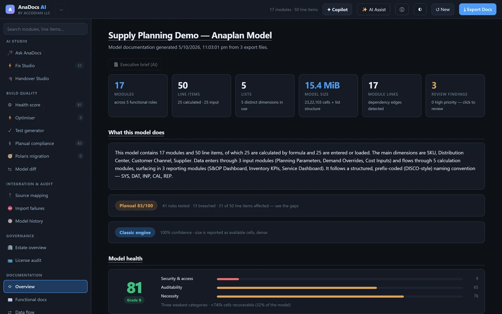
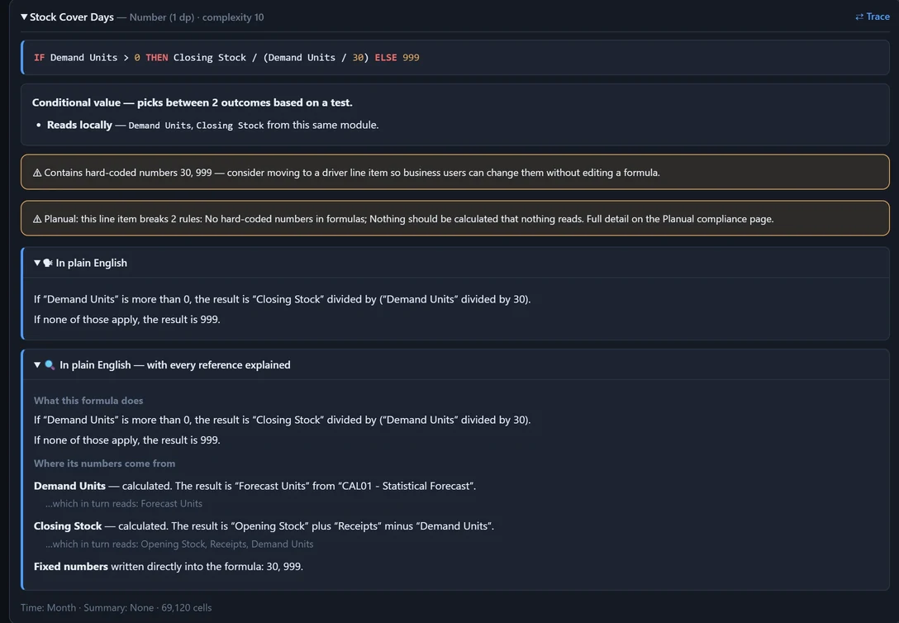
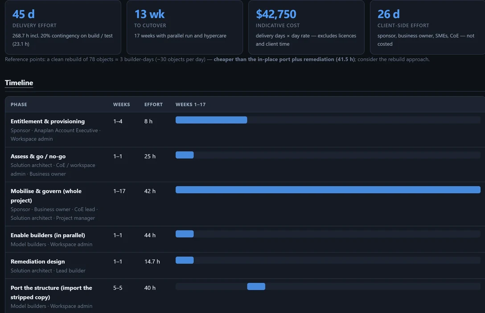

Understand every Anaplan model. Fix it, plan the next one, watch it run.
AnaDocs AI reads the structure of your Anaplan models, from exports or a read-only connection, and shows what each one does, what it costs and what to fix first, with the fix written for you. Now it also plans new models from your workshop transcripts and watches live models while they run.
Free accounts document one model with the full documentation, health score, Planual compliance, Optimisation report and Polaris planner: you name the model when you sign up and the administrator confirms it. Pro and Enterprise add the AI features, the Estate and Model Planner, the tabbed workspace and the Monitor. A person approves each account, usually within a business day. No credit card.

Plan the next model before anyone builds it
New Anaplan models start as workshop conversations and too often end as rework. The Model Planner turns those conversations into a checked build pack: requirements traced to the sentence that asked for them, dimensions reused from the models you already run, and modules, line items and draft formulas your builder can click in.
Seven steps from a conversation to a build pack
- StartName the plan and write a short brief. The estate proposes where the model fits: which hub feeds it, which workspace, which models it exchanges data with.Rules, free
- RequirementsUpload Teams or Zoom transcripts. Names and e-mails are removed in your browser first; AI writes a register where every line cites the sentence it came from, with conflicts, open questions and user stories.AI: Claude Haiku reads, Claude Sonnet merges
- DimensionsPick lists from the models already in your estate, data hub first. Time, versions and currency are inherited from the model the plan feeds.Rules, free
- Flows and environmentsImports from the hub, file layouts for source owners, a nightly slot that avoids existing schedules, change requests for other model owners and a DEV / TEST / PROD plan.Rules, free
- BlueprintApprove "what I will build" first. Then a DISCO module plan, line items, pages, roles, access and the approval workflow: a pattern library writes most formulas for free, AI drafts only the hard ones, and every name is checked.AI only for the hard parts
- ChecksSize in Classic and Polaris with advice, design checks and an 82-item readiness checklist that shows what is still missing.Rules, free
- Build pack and go-liveA build checklist with click paths, tests, a go-live plan and the monthly runbook, all in one pack.Rules, free
- R01mustPlan payroll cost and headcount person by personcites T1.L0012 · HR director
"We want the workforce plan built person by person, not one salary number per cost centre."
- R05mustEach manager sees only the people in their own cost centrescites T1.L0018 · HR director
- R06conflict C1Managers see team totals only, or each person's costcites T1.L0019 and T1.L0020 · becomes question Q1
- R14mustEmployer social tax stops when year-to-date pay reaches the annual capcites T2.L0035 · compensation analyst
- Dimensions
- 5: three from the estate, one promoted in the hub, one new
- Modules
- 25 in six business areas · SYS 10 · DAT 2 · INP 6 · CAL 5 · REP 2
- Flows
- 10 · nightly at 02:30 UTC, after the hub finishes
- Size
- 4.7–5.4 M cells · Classic 35–40 MB · Polaris about 48 MB
- Requests
- 5 change requests to other model owners
- Checks
- 0 open blockers · 4 open warnings
One build pack, ready for the builder
Everything a builder needs to click the model in, and everything a CoE lead needs to sign it off. Every file says DRAFT until the plan is approved.
- Requirement register with sources, conflicts, open questions grouped by who to ask, risks and user stories
- DISCO module plan with the dimension matrix and naming that matches your estate
- Line items with format, summary, versions and a draft formula, each tied to the requirement it serves
- Sizing in Classic and Polaris, with the engine and workspace advice
- Flows and file layouts, a nightly slot clear of existing schedules, and an ALM plan
- Change requests for the owners of the hub and the models you feed
- Pages, roles, access and the approval workflow
- Build checklist with click paths, tests, a go / no-go list, cutover and the monthly runbook
- Read the transcripts · Haiku$0.008
- Merge into one cited register · Sonnet$0.089
- Outline, "what I will build" · Sonnet$0.070
- Line items, 6 calls · Sonnet$0.171
- 3 hard formulas · Sonnet 1, Opus 2$0.093
The examples above come from the sample plan every account can open: Northwind Outdoor, a fictional retailer, planning a Workforce Planning model. Every company, person, transcript line and number in it is invented. The planner never writes to Anaplan: Anaplan's APIs cannot create modules, line items or formulas, so it prepares everything and your builder clicks it in. Transcripts are kept in your browser only if you choose. Plans are part of the Estate on Pro and Enterprise.
Fix what costs the most first, with the formula written for you
The Optimisation report scores every finding on what it really costs at your model's scale, so the list starts with the changes that pay back. Tick the ones you want, send them to Fix Studio, and get fixes you can paste.
Priorities from real impact, not rule counts
A rule broken on a line item nobody reads is not the same as one that slows every recalculation. Each finding is weighed on what it costs here.
- Size cost from what Anaplan reports or the export measures, never guessed from a grid.
- Calculation cost, measured when you add Anaplan's Line Items export, estimated from the formula when you don't.
- Who reads it: how many items depend on the finding and how heavy those readers are.
- Rules broken, with the Classic and Polaris performance and size checklists alongside.
- High, Medium and Low sections with filters, and an AI review of the ranking on the cheapest capable model.
Fix Studio: your priority sets the depth
Send findings from the report, or from any line item: every line item opens its formula page with a Findings-and-fix card. Fix Studio keeps the queue, shows each finding's impact and where it is, and asks the right model for the right depth.
- High: the in-depth fix on Claude Opus, with the analysis, a paste-ready formula, the expected impact, alternatives and a test.
- Medium and Low: a lighter fix on Claude Sonnet, quicker and cheaper.
- Collected into a remediation pack you can hand to the builder or attach to a release.
- Analysis
- Why the expression is expensive at this model's scale, and what reads it.
- Paste-ready formula
- The corrected formula, with any helper line item it needs.
- Expected impact
- What should change in calculation time or size.
- Alternatives
- Other ways to get there, and what each one trades off.
- Test
- How to prove the fixed model gives the same answers.
Read any formula in plain English. Describe a new one and get it built.
Each line item gets its formula, what it does in words, where every number comes from and the rules it breaks. New model owners stop reverse-engineering and start reading.
- Plain-English narration from a real formula parser: IF chains, time functions, lookups and aggregations.
- Every reference traced one level upstream, so you see what feeds the number without clicking around.
- Warnings in context: hard-coded numbers, Planual breaches and complexity, right on the line item, with its findings and a fix one click away.

From the built-in demo model. Click the screenshot to open it full size.
Formula playground
Describe what you need in your own words. You get the formula for this model, the line item settings, any helper items it needs and the assumptions it made, and every name it quotes is checked against your model.
- Simple asks on Claude Sonnet: quick and inexpensive.
- Complex ones on Claude Opus: cross-module logic, time functions, lookups, ranking and allocation.
- Checked, not guessed: a name that does not exist in your model is flagged before you paste anything.
Next Month Demand = NEXT(Demand Units)
Formula · Stock Cover Months
IF Next Month Demand > 0 THEN Closing Stock / Next Month Demand ELSE 0
- Settings
- Number, 1 decimal · Summary: None · Time: Month
- Names
- Demand Units, Closing Stock found in CAL03 - Inventory Projection
- Model
- Claude Opus: the ask uses a time function
Ask your model history anything
Drop Anaplan's History export or pull it through the connector, then ask in plain words. Who changed which values, when, and for which combination of list items, time and version. When a formula changed and what it was before.
- Value changes found by user, item, period and version, with the rows that prove it.
- Formula versions of any line item, traced through the history with a word-by-word diff.
- Streamed in your browser: a 1.8-million-event history export in about five seconds.
- The export never leaves your browser. For an AI answer only the matching rows are sent, with people and e-mail addresses replaced by tokens first.
- Version 1
IF Demand Units > 0 THEN Closing Stock / Demand Units ELSE 0
- Version 2
IF Demand Units > 0 THEN Closing Stock / (Demand Units / 30) ELSE 0
- Version 3 · current
IF Demand Units > 0 THEN Closing Stock / (Demand Units / 30) ELSE
0999
Action runs and CloudWorks
API, CloudWorks and scheduled runs in one view: what failed, the rows Anaplan rejected and how long each process step took, plus CloudWorks schedules and how reliably they ran.
Import failures, honestly
Runs a person starts in Anaplan's own screens are invisible to every API, and AnaDocs says so. Drop or paste the failure file and get root causes with the fix for each, checked against your model.
Source mapping
Profile an ERP extract against its target module, column by column and value by value, before the first load goes wrong.
The models you look after, open in tabs, and watched while they run
Open several models in tabs, move between them as you work, and keep a Monitor on the ones that matter: memory and state over time, and the name Anaplan reports for whoever submitted the change it is processing.
| When | State | What Anaplan reported |
|---|---|---|
| now | Processing | Import running, submitted by the name Anaplan reports |
| 17 min ago | Saving | Model saved; the memory figure moves |
| 28 min ago | Updating | Model updating after a change |
The tabbed workspace
- Tenant and model picker: open several models in tabs and switch between them: three live on Pro, six on Enterprise.
- Tabs remembered in your browser, so the workspace is waiting when you come back.
- Back and forward across pages, and Tips that explain the figures when you hover.
The live Monitor
- Readings every 10, 30 or 45 seconds, or every 1, 5 or 15 minutes, with a chart, a log and a CSV download.
- Who is processing: the name Anaplan reports for the person who submitted the change.
- Read-only and browser-held: it runs only while your browser is open, never writes to Anaplan and stores no credentials.
AI only where it adds value, on the cheapest model that can do the job
Most of AnaDocs is deterministic code: parsing, scoring, sizing, the Planual and the planner's pattern library are free, instant and the same every time. AI, built on Anthropic's Claude, is called for judgement, and each call goes to the least expensive model that can do it well.
Reads workshop transcripts chunk by chunk for the Model Planner, citing the line each requirement came from.
The cited requirement register, plan outlines and line items, Medium and Low fixes, and simple formulas in the playground.
High-priority fixes with full analysis, and complex formulas: cross-module logic, time functions, lookups and ranking.
The price before you press
Every AI button shows what the call will cost before it runs. The only automatic call is one short AI review of the report's priorities, once per model, when you open the Optimisation report or Fix Studio, and its cost is shown on the page.
Budgets per account
Daily and monthly limits in US dollars on every account, plus a soft cap for each model plan, so AI spend never runs away.
Prompt caching
The model context is cached between calls, so follow-up questions and batches of fixes do not pay full price for it again.
Answers you can check
The Copilot reads the parsed model through tools instead of guessing, and every claim links to the module or line item it came from.
The documentation and analysis a senior consultant would produce, generated
Connect read-only or drop the exports Anaplan already gives you. AnaDocs AI parses every module, line item and formula and builds the documentation and analysis a reviewer would sign off.
Living documentation
Functional and technical docs per module, data-flow diagrams, dependency maps, a business glossary and line-item lineage, exported as an interactive doc site or Markdown.
Exports or a read-only connection
Sign in to Anaplan and pick a model, or drop the exports you already download. Column names don't need to match; AnaDocs recognises Anaplan's exports.
Health score & Planual
Twelve weighted categories against PLANS, DISCO and the Planual, with the scoring maths shown and intentional design choices excludable with a written reason.
Estate & cross-model lineage
Pro and Enterprise: map how your models feed each other, trace a number across models, see what breaks if a module changes, spot shared lists that drift and risks with their evidence.
Polaris migration planner
What will not work on Polaris, what calculates differently, what to redesign, and a phased plan with effort, timeline and roles. More below.
Copilot
Ask about the model, its history, the estate or the licences. One AI entry point for the whole app, with clickable citations.
Handover Studio
Onboarding generated from the model itself: the guided tour, the formulas that matter, a 30/60/90 plan and comprehension checks.
Model diff
Compare a model with an earlier blueprint export and see exactly what changed, before you sync or after someone else did.
Licence audit
Seats you pay for against the work people actually recorded, with dormant and over-licensed seats priced at your own contract rates.
A senior-consultant migration assessment, generated from your model
Anaplan's direction is Polaris, and there is no converter. AnaDocs AI scans every line item against the documented engine differences and builds the plan around what it finds.
- Will not work: functions Polaris lacks, summary-method combinations it rejects, over-length formulas, invalid LOOKUP and time-scale patterns.
- Reconcile: valid formulas whose answers change between engines, pre-flagged for the reconciliation team.
- Redesign: patterns Polaris amplifies, ranked against your model's own calculation-effort hotspots.
- The plan: entitlement, port or rebuild, remediation, security, parallel run, cutover and hypercare, with effort and timeline you can tune.

From the built-in demo model. Effort, cost and timeline recalculate from your own assumptions: team size, day rate, contingency, port or clean rebuild.
It reads your model. It never changes it, and it keeps no copy.
Model designs are confidential. AnaDocs AI documents structure, not your planning numbers, processes it in memory, and keeps what is personal in your browser.
Never writes to Anaplan
The connector reads structure and metadata, the Monitor reads status, and the Model Planner hands a build pack to your builder. AnaDocs changes nothing in your models.
No stored credentials
The live connection relays your own Anaplan sign-in, read-only and only for the models your account is approved for. Your Anaplan password is never stored, and the Monitor holds no credentials.
Processed in memory
To build the documentation, the model's structure (names, formulas, dimensions, formats, sizes and notes, never cell values) is sent over an encrypted connection and processed in memory. It is kept for at most 30 minutes after your last request, never written to disk or logged, and discarded when you sign out.
Personal data stays in your browser
Model history exports, transcripts, Monitor readings and remembered tabs live in your browser. Before AI sees model history, licence data or workshop transcripts, people's names and e-mail addresses are removed or replaced by tokens in your browser, and only the text the task needs is sent.
Locked down by policy
A strict content-security policy blocks every outbound connection except to the AnaDocs server and the AI provider. AI requests go through our server within your account's limits, and only token counts and cost are kept. Every account is approved by a person before it can connect to Anaplan.
Metadata, not data
Documentation needs structure, not your planning numbers. The connector pulls structure and metadata. The only values it brings in are the ones you ask for, such as a Model History export or list members for Source mapping, and those stay in your browser.
AI output is generated and should be checked against the model before you rely on it. AI runs only when you ask for it, apart from the one short AI review of the Optimisation report's priorities, which runs once per model when you open the report or Fix Studio. AI runs on Accodian's Claude account within the allowance set for your account: our server builds each prompt from your model's structure, your request and the results of the look-ups the AI makes, and sends it to Anthropic. Those look-ups can include data you loaded into the page, such as before and after values from a Model History export or rejected lines from an import-error file; cell values from the model itself are not sent. People named in model history, licence data and transcripts are replaced or removed in your browser first. We store only counts and cost, never your questions, the answers or your model, and a conversation is held only in server memory, until 30 minutes after your last question. Your account record holds your email, name and plan, the name, id and size counts of the models you document, and the token counts and cost of each AI request.
From a model to a plan of action in three steps
Connect or export
Sign in to Anaplan through the read-only connector and pick a model, or drop the Blueprint export. Nothing to install and no integration project.
Understand
Documentation, the health score, Planual compliance, the Optimisation report and the Polaris plan are built in memory, ready to read and export.
Act
Send findings to Fix Studio, ask the Copilot or your model history, plan the next model, or open a Monitor and watch the model run.
CoE leads
Estate-wide health and lineage, risks with evidence, licence reclamation, and a sized, checked design before any new model is built.
Model builders
What a formula does, what depends on it, what to fix first, and a fix or a new formula checked against the model.
Partners & consultants
Health checks, handovers, Polaris assessments and requirement-to-build-pack design in a fraction of the time.
Five Anaplan problems, solved from the exports
A Polaris migration decision, a model whose builder has left, a Classic model that got slow, a Polaris model that needs tuning, and an eight-model estate. Illustrative scenarios with the numbers AnaDocs produces.
See AnaDocs AI on your own model
Book a walkthrough and we'll document one of your models live, rank what to fix and generate the fixes, then show the Model Planner turning a workshop transcript into a build pack.